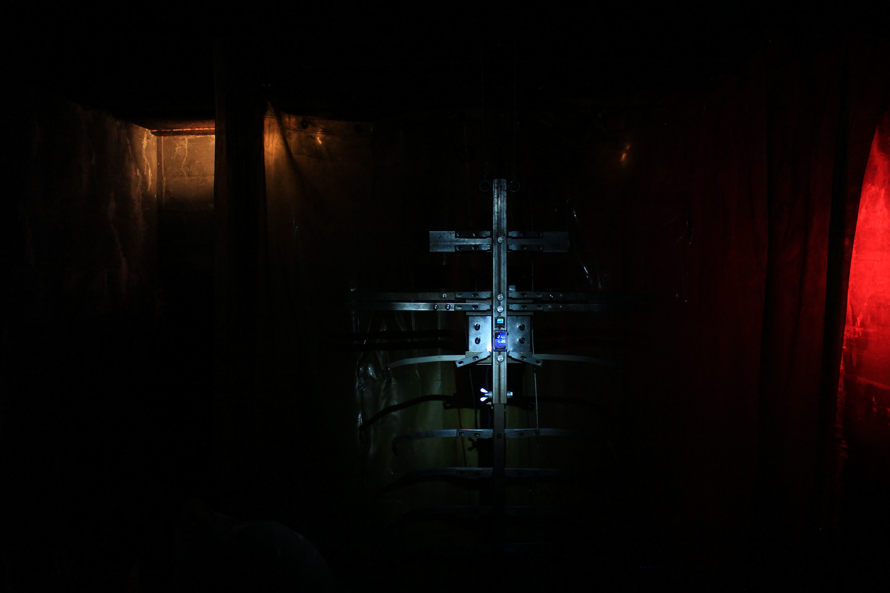
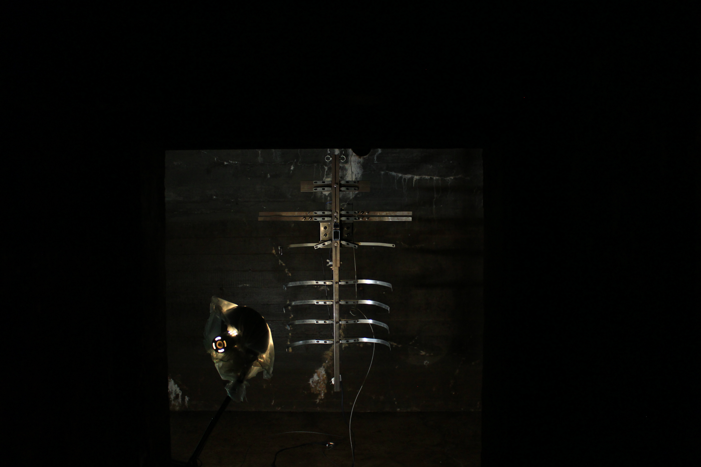

...but in any case, one could at least close the doors and windows while the executions are taking place.
23-24 May, 2026
Performance & Installation
Shown at Regelbau 411 as part of Odd(e) S(o)und(s), 89Sound Final Program


The rib cage of a cyborg pig. Harvested for all its flesh and organs. Left in a dormant
state between death and persistence. The remains of a body sustained only by the
faintest pulse of electrical current left in its circuitry.
Uncovered by a group of archaeologists in an abandoned Nazi bunker. These skeletal
remains were found suspended from the ceiling, resembling a fetish of component
worship. An ossuary of technological alterlife.
…But in any case, is an interactive sculptural installation made as part of a residency at Sound Art Lab, in Struer, Denmark.
The title of the piece comes from a loosely translated quote from Danish writer Johannes Buchholz, who sent a public letter complaining to the municipality complaining about being able to hear (and smell) the sounds of the slaughterhouse from his own home. Which conspicuously is a sonic element that is not present in the soundscape installation the Struer museum has set up in the interior of his preserved home. The idea of this soundscape is to give an impression of the sounds that would have been present during the time that the writer lived there. On the surface, the sounds of slaughter understandably would be an intense and confronting sound to include. However, how can the museum claim to present authenticity of and sonic representation if this distinct and prominent sonic element is intentionally ignored? This for me was a larger starting point in thinking of how landscapes and living spaces are curated to hide away to continue our consumption habits?
Built from metal from an abandoned metal workshop in the Harman Samsung building, Using a Teensy 4.1 with custom written code. The installation was shown at a Nazi Bunker turned exhibition, for Odd(e) S(o)und(s). A weekend exhibition program done with Performing Landscapes, 89Sound, and Regelbau 411. The installation was set up to give the appearance that you are entering an archaeological / scientific site. A site of research and observation, as if you are walking into a space that would normally be off limits.
Additionally, as part of the program, I also performed with the instrument, with the audience being able to listen to the sounds both outside and inside of the bunker. The PA system was placed on top of the bunker but hidden out of sight to give the illusion the sound is emerging from the bunker.